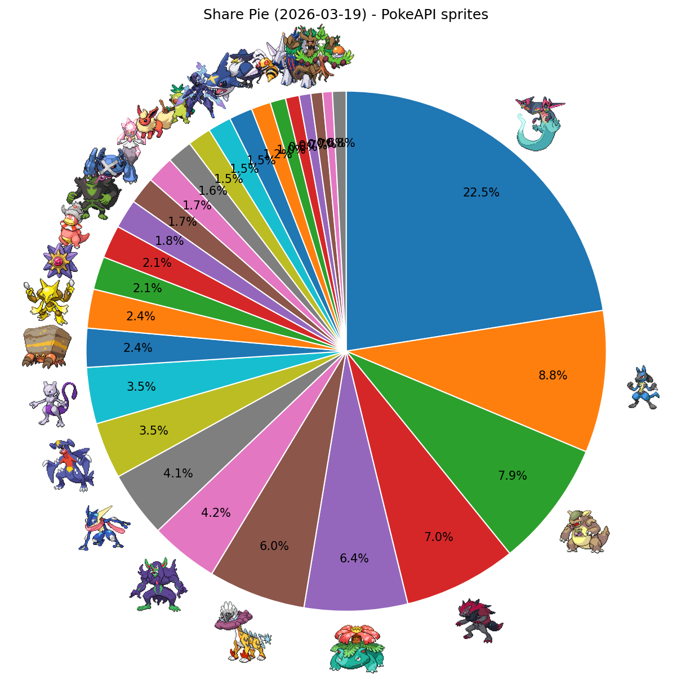
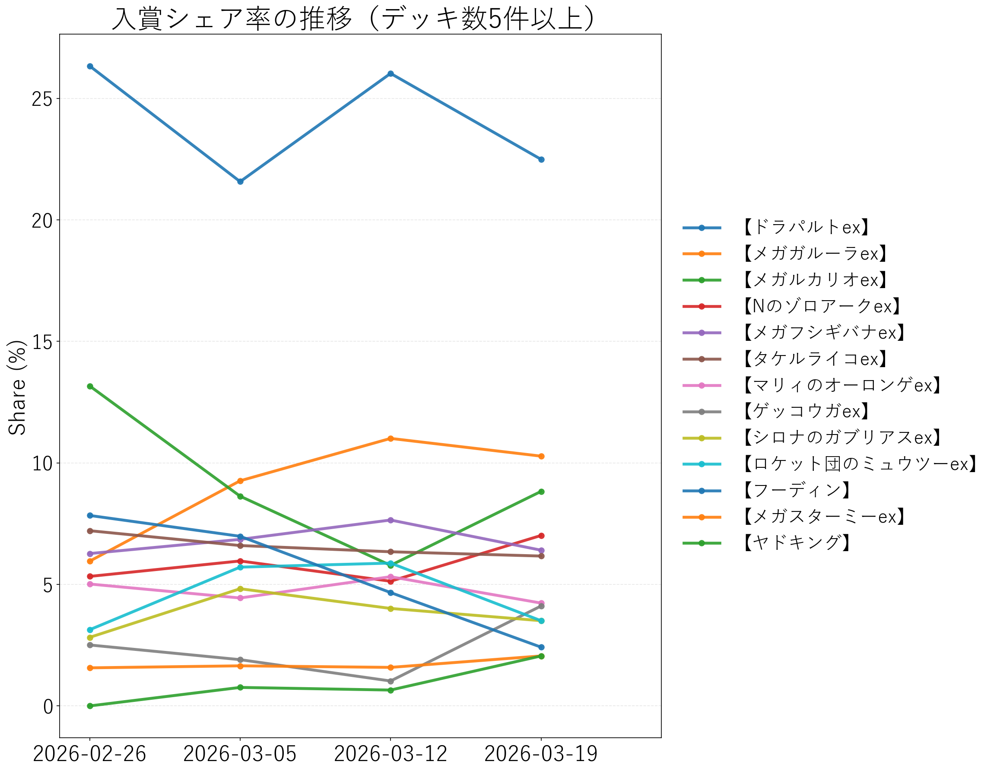

↔ 横スクロール
| 順位 | デッキタイプ | 入賞数 | シェア |
|---|---|---|---|
| 1 | 【ドラパルトex】 | 186 | 22.49% |
| 2 | 【メガルカリオex】 | 73 | 8.83% |
| 3 | 【メガガルーラex】 | 65 | 7.86% |
| 4 | 【Nのゾロアークex】 | 58 | 7.01% |
| 5 | 【メガフシギバナex】 | 53 | 6.41% |
| 6 | 【タケルライコex】 | 50 | 6.05% |
| 7 | 【マリィのオーロンゲex】 | 35 | 4.23% |
| 8 | 【ゲッコウガex】 | 34 | 4.11% |
| 9 | 【シロナのガブリアスex】 | 29 | 3.51% |
| 10 | 【ロケット団のミュウツーex】 | 29 | 3.51% |
| 11 | 【イワパレス】 | 20 | 2.42% |
| 12 | 【フーディン】 | 20 | 2.42% |
| 13 | 【メガスターミーex】 | 17 | 2.06% |
| 14 | 【ヤドキング】 | 17 | 2.06% |
| 15 | 【イイネイヌ】 | 15 | 1.81% |
| 16 | 【ダイゴのメタグロスex】 | 14 | 1.69% |
| 17 | 【メガディアンシーex】 | 14 | 1.69% |
| 18 | 【ブースターex】 | 13 | 1.57% |
| 19 | 【おまつりおんど】 | 12 | 1.45% |
| 20 | 【ソウブレイズex】 | 12 | 1.45% |
| 21 | 【メガサメハダーex】 | 12 | 1.45% |
| 22 | 【ロケット団のドンカラス】 | 10 | 1.21% |
| 23 | 【スピアーex】 | 8 | 0.97% |
| 24 | 【ブリジュラスex】 | 6 | 0.73% |
| 25 | 【ホップのオーロット】 | 6 | 0.73% |
| 26 | 【オリーヴァex】 | 5 | 0.60% |
| 27 | その他 | 14 | 1.69% |

PokeAPIアイコン付きシェア円グラフ

入賞シェア率の推移